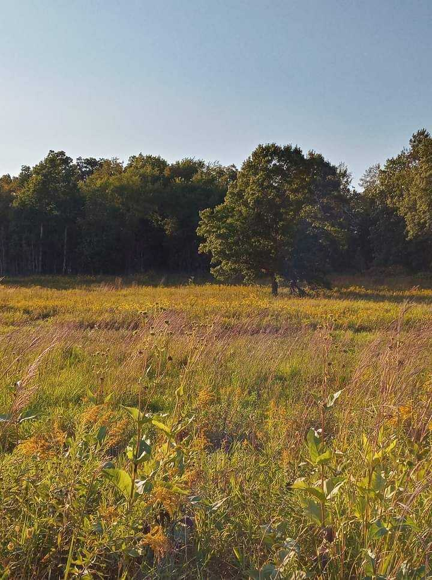

Our Purpose
Welcome to Friends of Cherokee Marsh! We are dedicated to preserving and protecting the natural beauty of Cherokee Marsh and fostering a community that values environmental conservation.
Explore Cherokee Marsh
Photo taken by Keller Tree "Tree in the Marsh"